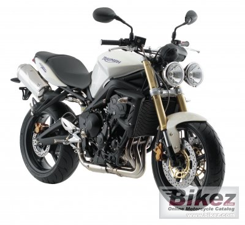

On this page:
1) How to pass the DMV Motorcycle Skills Test
2) Beginner bikes
3) Brian's picks
4) CLIPS
5) General Riding tips
6) 50 Ways to save your life.
7) Supermoto Riding tips
8) Supermoto Track etiquite
to pass the DMV Motorcycle Skills Test:
I've watched about a thousand people take the test over the years, so I've got a pretty good idea of what works and what doesn't. I'll keep this real simple since I know testers over think the test as it is: |
1. Get the right bike. I promise this would be my first tip even if I didn't run dmv test bike. I've had ama racers rent the test motorcycle because THEY couldn't pass the test on their bikes. I personally can not do the test on a late model 600 sportbike. Lightweight helps, but the most important thing is a bike that has good leverage and a tight turning radius.
2. Look 10 feet ahead, DO NOT LOOK AT YOUR FRONT WHEEL. I can't emphasize this one enough
3. Feather/ride the clutch. Hell, it aint your bike, burn up the clutch! That said, the dmv test bike is set up to simply idle around the circle.
4. Avoid using the front brake. Personally I don't use any brake, but if you're going to brake in the test, use the rear.
5. RELAX!!! Sing "sitting on the dock of the bay" in your head. I'm serious. It totally works. |
Beginner Bikes, riding tips, and a bunch of other rambling.... |
|
|
|
|
|
New riders commonly ask, "What is a good beginner bike?" The quick and easy answer is any bike that is reliable and easy to control. Here are a few guidelines and suggestions. Most riders see themselves as fitting into the sportbike or cruiser folds, so I've divided them up. These are just a few suggestions, not a complete list. I'd also recomend that you be sure not to pigeon hole yourself as one type of rider, ie cruiser, dirt, dual sport, supermoto, streetfighter, sportbike, etc. Riding all types of bikes and conditions will make you a much better rider.
Sportbike folks:
-If you ask any rider what's a good beginner bike for those interested in a sportbike, much of the time you'll hear "SV650" (the sv has been replaced by the gladius, but I'm having a really hard time recomending that ugly bike). There's a good reason for this. The SV is cheap, bulletproof, lightweight, easy to ride for beginners, has a ton of aftermarket support, and even makes a very fun club racer if track days are in your future. If you pick up a SV get the "naked" version. Why? Because the naked version comes with handlebars instead of clipons. Clipons are the small handlebars that bolt directly to the fork tubes. The function of clipons is to put more weight over your front tire, which is useful in high speed sweepers. However the world is not made of high speed sweepers. Standard handlebars will give you more leverage, better visibility and much, much better comfort."But I want a cbr600rr/gsxr750/R1." Don't buy a race replica as your first bike!!! Here's the deal. The very thing that makes a bike stable leaned over at 130mph, makes it totally difficult to maneuver for daily riding. Just watch a new rider try to make a u-turn, hit a pothole, or park a new sportbike. Sure "fairings look cool", but nothing looks dumber than a guy on a $12,000 sportbike that can't ride. You'll have more fun and be a much better rider on the right bike. Also don't worry about how many cc's a bike has. What is important is how well you can control the bike. a experienced rider on a 250 ninja will spank the crap out of a rookie on a gsxr1000. Remember, IT'S THE CARPENTER NOT THE TOOLS. The following are comfortable, easy to ride sportbikes that are still very capable of lose-your-license speeds. pictured above L to R: suzuki sv650, Finally updated ninja 250, ducati monster 695, Motorcycle of the year Kawasaki Versys (yes it's ugly but an amazing all arounder) |
|
|
|
|
Cruiser folks. One thing of note, although the cruiser position looks relaxed, it can put quite a strain on your neck and back on long freeway rides, so in this section I've included "standards" like the Triumph Bonneville, bikes that are sexy, easy to ride, and comfortable. To be honest, all the Japanese 650ish cruisers work very well as first bikes. They're reliable, have a low seat height, easy to ride, but still have enough power for the freeway. Plus you can find clean examples for $3000. A lot of new riders seem to feel very comfortable on the Suzuki boulevard c50. It's relatively cheap, and pretty easy to ride. One bike that is always on the best buy list is the good old Harley Sportster. Harley actually looses money on this model priced at $5999 brand new. The idea is to establish brand loyalty and it seems to work. Anyway, the good old sportster is made of metal, feels like a real motorbike, relatively easy to ride, low seat height, and has good resale value. Some worry that "hardcore Harley guys" refer to the sportster as a "girls bike". 1) those guys are just dentists and lawyers that play dress up on the weekend. 2) Only wankers knock the bike, no hardcore daily rider will ever talk smack about sporty. Sportbike guys are just as snobby dismissing all harley as slow and outdated. Well they are, but they're very fun to ride slow outdated bikes! You'll never find me riding one, simply because I prefer to take a moderately paced turn without metal parts dragging on the ground. Below: Suzuki Boulevard c50, Harley Sportster, Honda Shadow, and Triumph Bonneville. Another thing to note is that cruisers will be more comfortable for shorter riders. Honestly the lack of cornering clearance (with exception of the triumph) scares the absolute crap out of me, esp the sporty, These bikes all touch down ridiculously early, making the bike unable to pull off emergency swerves. |
|
|
|
|
Buying too much bike is probably the most common beginner mistake. Just to be clear, here's my official new rider bike recomendations, meaning these are the bikes I would recomend to my wife or friends who start riding. You will have more control, and more FUN on the right bike. Here are two of the most beginner friendly bikes that are also still entertaining for experienced riders, the ninja 250, and the new klx250sf supermoto:
Brian's daily rider faves
|
This is the golden era of motorcycles. 10 years ago it was tough to find a bike that wasn't a cookie cutter sportbike or harley clone. Now we've got insane sportbikes like the aprillia rsv4, and ducati 1098, wierd neo retro bikes like the royal enfields, mega motards like the ktm 990 and the ducati hypermotard, harley put out a decent looking bike with their new wide glyde, Guzzi has a sweet little cafe racer, and bmw learned it's ok to make bikes that go fast. My point being you can get whatever the hell you want these days. Honestly there are so many bikes I want now, that I just picked a couple that I wouldn't mind as a everyday commuter. Do you want to go 140mph regularly? If no you don't need a fairing. You'll notice a common theme with these bikes. They're all simple, clean, torquey, flickable, reliable, and insanely fun bikes, which is the real reason we're riding eh? Ok I want a million bikes but I limited my picks to a few:
1. KTM 990 Supermoto, and Supermoto tourer.
2. Kawasaki Versys. I still think they look ridiculous. I've ridden one, thought is was super comfy, good power, and handled well, which is pretty much all I'm looking for these days.
|
3. Triumph Bonneville - Feels like a real motorcycle, not the fastest, just a nice motorbike. imho nothing looks better than old bonnie's and nortons. This one is like 900cc, oil cooled, really nice engine that'll spank the crap outta any harley, and do it in more comfort, handling, and style. I love how the soap bar seat, and tear drop tank comes to a point, making the bike feel really narrow. Go ride one, you'll dig it. |
4. Triumph street triple. Another phenomenal all arounder. The great thing about the all arounder bikes now is that there's really no compromise. Great suspension, power, and brakes, unlike 10 years ago when the standards were crappy partsbin versions of company sportbikes. Speaking of sportbikes, if I rode %80 of the time on the rr track you'd see some here. But I'm a big believer in the right tool for the job, hence the reason you see these well sorted, flickable, all arounders.
|
|
|
|
 |
|
C.L.I.P.S.
Brian’s 5 Commandments, CLIPS:
C – Cover the front brake. Thou shalt cover thine front brake ALWAYS
L – Look in the direction you want to go, you will go there!
I – In Slow, Out Fast. Avoid braking in a turn, get your braking done BEFORE the turn. Brake 70/30 front to rear ratio
P - Push in the direction you want to go, ie counter steer (if you don't know counter steering, you need lessons!)
S- Scan the roads at all times, assume you are invisible. "They're all drunk and I'm invisible." |
| |
|
|
|
General Riding Tips
1. Don’t ride in the middle of the lane. Cars dump coolant, oil and gas in the middle of the lane. This is especially apparent in rain after a dry
spell. Drive on either side of the lane.
2. DRESS FOR THE CRASH, NOT FOR THE RIDE Don’t spend 10k on a bike, and $200 on gear. Proper gear will save
your ass, literally. Picture yourself sliding down the freeway at 70mph. Then dress appropriately.
3. Find your space in traffic. The car on your right is quickly approaching a slower vehicle, meaning they will likely swerve into your lane. Don’t
be in their blind spot, speed up, or slow down where you can be seen.
4. Ride 5mph faster than Traffic. I said 5mph, not 30mph! This is what the CHP cops do, so should you.
5. When turning left, turn from the middle of the lane not the center of the road. This only encourages cars to go by you
putting you at risk of being clipped.
6. Play the "what if" game. ie what if that car swerves into me, what if he slams on the brakes, what if that mattress comes flying out of the
truck, what if that car pulls a turn in front of me. Doing this while riding will make you prepared for when it happens. IT WILL HAPPEN!
7. When braking check your mirrors. You can stop twice as fast as the soccer mom in the excursion behind you. That's IF they see you
stopping to begin with. If traffic comes to a sudden stop, brake, check your mirrors while slowing. If you think you might be rear ended, look
for spaces between the cars in front of you. Better to slip between cars, then get rear ended.
8. Watch drivers heads and mirror movements. They provide a good clue as to the drivers intentions.
9. Never get between a vehicle and a off ramp. Drivers that make last minute decisions to exit can side swipe motorcyclists. I've got a friend
that was taken out exactly this way. If you absolutely must pass on the right, don't do it near off ramps or intersections.
10. Get noticed. Use your high beams, bright clothing, powdercoat your bike fluorescent orange, use after market brake-light flashers, buy
gear with reflective material, etc. Statistically speaking, loud pipes don't actually save lives, bright gear however does.
11. Be ready with power. In town ride in a gear lower than usual so that you have get away power. Likewise keep your bike in gear at
intersections for a quick get away.
12. Look for gaps in traffic, and ride in them. Ride assertive (not defensive or aggressive) and find your spot in traffic. avoid blind spots and
give yourself plenty of stopping gap!
13. Use that thumb. Get into the habit of canceling your turn signals often regardless of the traffic situation. A blinking signal might tell drivers
waiting to pull into the road or turning left in front of you that you are about to turn when you aren't. So push that switch a few times each
minute. Better to wear out that switch than eat a Hummer's hood, eh?
14. Look for a escape route. For every traffic situation, picture your way out, and anticipate moves you might need to make. Bikes are small
and fit in narrow spaces when necessary, use that to your advantage.
15. Ride within your field of vision. If you can't see around a corner, imagine there's a car parked there. I've personally come around a blind
mountain turn to find a minivan doing a u-turn across the double yellow!
16. New tires are SLICK SLICK SLICK. Ride extremely slow and carefully until tires are "scrubbed" in. 3 heat cycles will generally do it.
17. Smooth is King. If you're riding smooth you're most likely doing it right, nothing on a motorcycle is an on/off switch. Give smooth progressive brake, gas, steering, and clutch inputs. This is especially crucial in wet weather or other low traction riding.
|
50 ways to save your life, motorcyclist magazine
We are what we repeatedly do. Excellence, then, is not an act, but a habit. – Aristotle
1. Assume you’re invisible Because to a lot of drivers, you are. Never make a move based on the assumption that another driver sees you, even if you’Ave just made eye contact. Bikes don’t always register in the four-wheel mind.
2. Be considerate. The consequences of strafing the jerk du jour or cutting him off start out bad and get worse. Pretend it was your grandma and think again.
3. Dress for the crash, not the pool or the prom. Sure, Joaquin’s Fish Tacos is a 5-minute trip, but nobody plans to eat pavement. Modern mesh gear means 100-degree heat is no excuse for a T-shirt and board shorts.
4. Hope for the best, prepare for the worst. Assume that care across the intersection will turn across your bow when the light goes green, with or without a turn signal.
5. Leave your ego at home. The only people who really care if you were faster on the freeway will be the officer and the judge.
6. Pay attention. Yes, there is a half-naked girl on the billboard. That shock does feel squishy. Meanwhile you could be drifting toward Big Trouble. Focus.
7. Mirrors only show you part of the picture. Never change direction without turning your head to make sure the coast is really clear.
8. Be patient. Always take another second or three before you pull out to pass, ride away from a curb, or into freeway traffic from an on-ramp. It’s what you don’t see that gets you. That extra look could save your life.
9. Watch your closing speed. Passing cars at twice their speed or changing lanes to shoot past a row of stopped cars is just asking for trouble.
10. Beware the verge and the merge. A lot of nasty surprises end up on the sides of the road: empty McDonald’s bags, nails, TV antennas, ladders, you name it. Watch for potentially troublesome debris on both sides of the road.
11. Left-turning cars remain a leading killer of motorcyclists. Don’t assume someone will wait for you to dart through the intersection. They’re trying to beat the light, too.
12. Beware of cars running traffic lights. The first few seconds after a signal light changes are the most perilous. Look both ways before barging into an intersection.
13. Check your mirrors. Do it every time you change lanes, slow down or stop. Be ready to move if another vehicle is about to occupy the space you’d planned to use.
14. Mind the gap. Remember Driver’s Ed? The second’s worth of distance per 10mph is the old rule of thumb. Better still, scan the next 12 seconds ahead for potential trouble.
15. Beware of tuner cars They’re quick and their drivers tend to be aggressive. Don’t assume you’ve beaten one away from a light or outpaced it in traffic and changing lanes without looking. You could end up as a Nissan hood ornament.
16. Excessive entrance speed hurts. It’s the leading cause of single-bike accidents on twisty roads and racetracks. In Slow, Out Fast is the old adage, and it still works. Dialing up corner speed is safer than scrubbing it off.
17. Don’t trust that deer whistle. Ungulates and other feral beasts prowl at dawn and dusk, so heed those big yellow signs. If you’re riding in a target-rich environment, slow down and watch the shoulders.
18. Learn to use both brakes The front does most of your stopping, but a little rear brake on corner entry can calm a nervous chassis.
19. Keep the front brake covered – always Save a single second of reaction time at 60mph and you can stop 88 feet shorter. Think about that.
20. Look where you want to go Use the miracle of target fixation to your advantage. The motorcycle goes where you look, so focus on the solution instead of the problem.
21. Keep your eyes moving Traffic is always shifting, so keep scanning for potential trouble. Don’t lock your eyes on any one thing for too long unless you’re actually dealing with trouble.
22. Think before you act. Careful whipping around that Camry going 7mph in a 25mph zone or you could end up with your head in the driver’s side door when he turns into a driveway right in front of you.
23. Raise your gaze. It’s too late to do anything about the 20 feet immediately in front of your fender, so scan the road far enough ahead to see trouble and change trajectory.
24. Get your mind right in the driveway. Most accidents happen during the first 15 minutes of a ride, below 40mph, near an intersection or driveway. Yes, that could be your driveway.
25. Come to a full stop at that next stop sign Put a foot down. Look again. Anything less forces a snap decision with no time to spot potential trouble.
26. Never dive into a gap in stalled traffic Cars may have stopped for a reason, and you may not be able to see why until it’s too late to do anything about it.
27. Don’t saddle up more than you can handle. If you weigh 95 pounds, avoid that 795-pound cruiser. If you’re 5-foot-5, forget those towering adventure-tourers.
28. Watch for car doors opening in traffic And smacking a car that’s swerving around some goof-ball’s open door is just as painful.
29. Don’t get in an intersection rut Watch for a two-way stop after a string of four-way intersections. If you expect cross-traffic to stop, there could be a painful surprise when it doesn't’t.
30. Stay in your comfort zone when you’re with a group Riding over your head is a good way to end up in the ditch. Any bunch worth riding with will have a rendezvous point where you’ll be able to link up again.
31. Give your eyes some time to adjust a minute or two of low light heading from a well-lighted garage onto dark streets is a good thing. Otherwise, you’re essentially flying blind for
the first mile or so.
32. Master the slow U-turn Practice. Park your butt on the outside edge of the seat and lean the bike into the turn, using your body as a counter weight as you pivot around the rear wheel.
33. Who put a stop sign at the top of this hill? Don’t panic. Use the rear brake to keep from rolling back down. Use Mr. Throttle and Mr. Clutch normally – and smoothly – to pull away.
34. If it looks slippery, assume it is A patch of suspicious pavement could be just about anything. Butter Flavor Crisco? Gravel? Mobil 1? Or maybe it’s nothing. Better to slow down for nothing than go on your head.
35. Bang! A blowout! Now what? No sudden moves. The motorcycle isn't’t happy, so be prepared to apply a little calming muscle to maintain course. Ease back the throttle, brake gingerly with the good wheel and pull over very smoothly to the shoulder. Big sigh.
36. Drops on the faceshield? It’s raining. Lightly misted pavement can be slipperier than when it’s been rinsed by a downpour, and you never know how much grip there is. Apply maximum-level concentration, caution and smoothness.
37. Emotions in check? To paraphrase Mr. Ice Cube, chickity-check yoself before you wreck yoself. Emotions are as powerful as any drug, so take inventory every time you saddle up. If you’re mad, sad, exhausted or anxious, stay put.
38. Wear good gear Wear stuff that fits you and the weather. If you’re too hot or too cold or fighting with a jacket that binds across the shoulders, you’re dangerous. It’s that simple.
39. Leave the iPod at home You won’t hear that cement truck in time with Spinal Tap cranked to 11, but they might like your headphones in intensive care.
40. Learn to swerve Be able to do two tight turns in quick succession. Flick left around the bag of briquettes, the right back to your original trajectory. The bike will follow your eyes, so look at the way around, not the briquettes. Now practice till it’s a reflex.
41. Be smooth at low speeds Take some angst out, especially of slow-speed maneuvers, with a bit of rear brake. It adds a welcome bit of stability by minimizing some unwelcome weight transfer and potentially bothersome driveline lash.
42. Flashing is good for you. Turn signals get your attention by flashing, right? So a few easy taps on the pedal or lever before stopping makes your brake light more eye-catching to trailing traffic.
43. Intersections are scary, so hedge your bets. Put another vehicle between your bike and the possibility of someone running the stop sign/red light on your right and you cut your chances of getting nailed in half.
44. Tune your peripheral vision. Pick a point near the center of that wall over there. Now scan as far as you can by moving your attention, not your gaze. The more you can see without turning your head, the sooner you can react to trouble.
45. All alone at a light that won’t turn green? Put as much motorcycle as possible directly above the sensor wire – usually buried in the pavement beneath you or located by a round or square pattern behind the limit line. If the light still won’t change, try putting your kickstand down, right on the wire. You should be on your way in seconds.
46. Everything is harder to see after dark. Adjust your headlights, carry a clear faceshield and have your game all the way on after dark, especially during commuter hours.
47. Don’t troll next to – or right behind – Mr. Peterbilt If one of those 18 retreads blows up – which they do with some regularity – it de-treads and that can be ugly. Unless you like dodging huge chunks of flying rubber, keep your distance.
48. Take the panic out of panic stops. Develop an intimate relationship with your front brake. Seek out some safe, open pavement. Starting slowly, find that fine line between maximum braking and a locked wheel, and then do it again, and again.
49. Make your tires right. None of this stuff matters unless your skins are right. Don’t take ‘em for granted. Make sure pressure is spot on every time you ride. Check for cuts, nails and other junk they might have picked up, as well as general wear.
50. Take a deep breath. Count to 10. Visualize whirled peas. Forgetting some clown’s 80-mph indiscretion beats running the risk of ruining your life, or ending it. |
|
Supermoto Riding Tips
Once you get used to riding a supermoto, every other bike will feel heavy and boring, even the blindingly fast bikes. One word you will always hear in regards to these bikes is "fun", which again, is why we're doing this. They do feel really different from "standard" motorcycles so I thought I'd give a few riding tips for anyone that is new to supermoto bikes:
- Foot out or knee down? In the early years of supermoto this was a common debate. It was fascinating to watch races because the field would be mixed of mx guys who would ride foot out, and road race guys who would drag knee. For the most part you'll now see almost entirely foot out in the turns style riding as it is easier to flick the bike from side to side. The general consensus is foot out in mid to slow turns, and knee out in the high speed sweepers. That said, knee down or foot out, if you're having fun you're doing it right. If you usally ride a sportbike and want to practice dragging knee that's fine.
- Trust the front end. If you come from sportbikes you're used to the feeling of trying to put lots of weight on your front tire, and the tire is pretty close to you so you feel pretty connected. Not so in supermoto, that front end is going to feel like it's a mile away. This can leave you feeling a bit unstrustworthy of the front tire. All I can say is get over it, until you really start pushing it that tire is going to stay stuck, learn to trust it.
- All that wiggling is ok. On a sportbike, if you get in a turn and your suspension is moving and your tires are sliding around, there's a very very good chance you are already crashing. As a result when you get on a sm, you can get kinda freaked out when you head into a hard turn and the bike is dancing all over place underneath you. The good news is that the long suspension is taking in all the bumps, so now the bike is moving around instead of loosing traction. A common mistake is for riders to try to firm up there suspension to feel more like there standard streetbike. Learn to like the bike moving under you, it's doing you a favor.
- Brake hard, brake late. Unlike streetbikes or dirtbikes, supermoto's can handle rediculously late braking. Practice braking later and later, and you'll see that most speed on the track comes from how late you can brake, corner speed, and how early you can get on the gas, not from horsepower. This advice of course refers to the track, on the street "in slow, out fast" still applies.
- Play with your gearing. You often hear how supermoto's don't make very practical daily riders. Well once you go up 2 teeth on your countersprocket suddently the bikes are capable of comfortably cruising at freeway speeds. Sprockets are cheap, and make a huge difference in the performance and liveablility of your sm.
- Countersteer! One AMA supermoto pro had written on his bar pad "PUSH IT DOWN YOU P*%$#". If you look at a supermoto pro mid turn they are practically sitting on the upperside of the bike, and pusing the inside bar down. You've got tons of leverage with those big bars, use it and countersteering to flick the bike from corner to corner.
- Shifting: On the track you can get away with upshifting without any clutch, thus preventing some serious hand crampage. Just remember to get off the gas before the upshift. As mentioned before, supermoto's brake amazingly. Unlike a sportbike at speed, sm's can brake much faster than you can bang down through the gears. So unlike you're street riding you'll do multiple shifts at the same time. Ie on the straight leading to a tight turn you might have it pinned in first. You'll then get on the brakes, bang it down three times into second, then letout the clutch as you brake into the turn.
- Braking: If you're coming from dirt, the bike will feel familiar. The biggest adjustment you'll need to make is shifting your braking to the front brake. You'll be using almost completely the front brake heading into turns. Then when you're in the dirt you can go back to braking just like you do with your mx bike using primarily the back brake.
- Backing it in: If it's one thing that new supermoto riders want to do is back it in, and don't worry you'll get plenty of practice sliding the bike into corners. The most important thing to realize is that backing it in is a side effect of speed, not a means to achieve it. Meaning as you brake later and later, while turning the bike in, you'll naturally start to drift the rear of the bike. If you're not currently backing it in, you'll start to as you learn to brake later. Lets say you're in fifth going down the straight and you have a second speed hairpin. You'll want to pull in the clutch, bang it down into second while getting hard on both brakes using primarily the front. Let out the clutch while braking, and begin to countersteer/push the bar down into the turn. You'll want to trail brake using the rear until the apex and smoothly transition back onto the gas. When you piece these things together you'll find that the rear will naturally and smoothly start sliding and you'll be backing it in like wardy (given immense talent and a lifetime of training).
Supermoto Track Etiquite
Riders new to the track experience tend to freak out a bit there first time on the track. The following is a guide to what you need to know for your first day on the track! Most of these also carry over to road race track days.
- Hold your line. Ride at your own pace, and don't worry if you're "slowing down everybody." It's the responsibility of faster riders to make a clean pass, not your responsibility to let them by. So focus on holding a clean line and being smooth and don't worry about the other riders. If they're like me they appreciate having slower guys they can pass for a change!
- Prep your bike. (all socal supermoto bikes are track prepared). Racers are the nicest people you will ever meet. Really. People at the track will usually drop what they're doing to give you a hand. Those niceties end fast when you drop a bunch of oil on their track. Prepping a bike for a supermoto track day is very easy and includes: removing unecessary parts, ie kickstands, mirrors, and license plates (less to break too). Putting high temp silicone, aka gorilla snot, on critical bolts like your oil drain plug. This prevents the bolt from backing out. For track specific bikes you'll probably want to use safety wire. Tape up all remaining lights and turn signals. Hook up a catchcan to your tank and carb vent lines. this catches fuel in the case of a crash. Replace your coolant with water and water wetter.
- Communicate: If there's a unexpected crash or obstacle, hold up your hand in the air. This lets others know of the danger. If you plan on exiting the track, left arm up as if to indicate right turn is a courteous way of letting others know. Usually people will know simply because you're slowing down near the exit, but it keeps somebody from passing on the right.
- Be courteous. Golden rule applies. Remember, we all go to work on monday. If you're not a pro, leave the aggressive riding elsewhere.
|
|